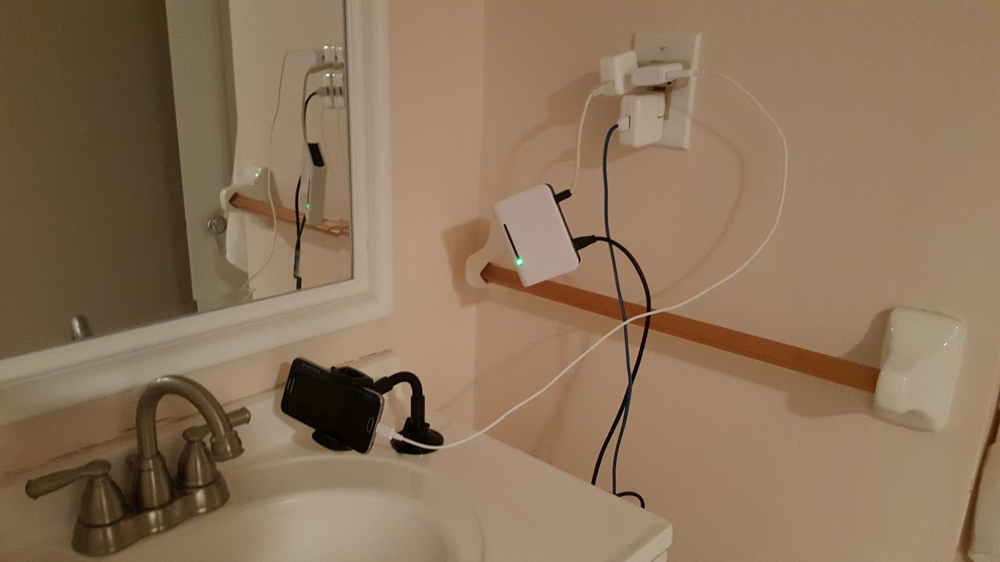
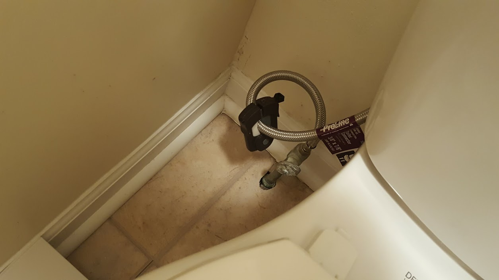
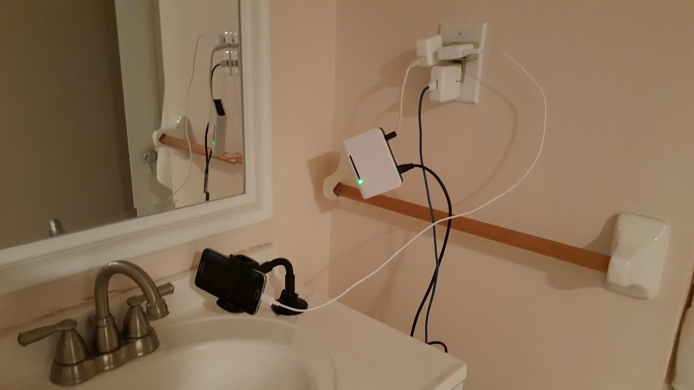
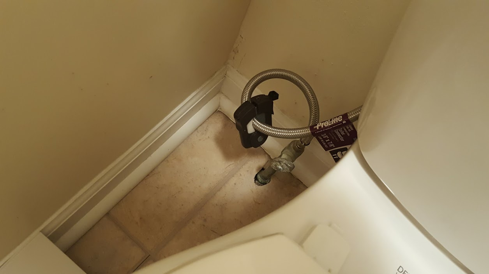
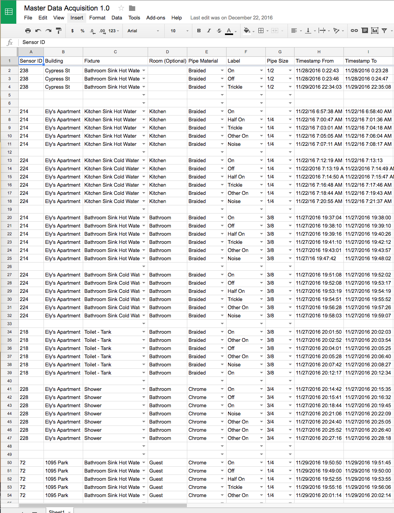
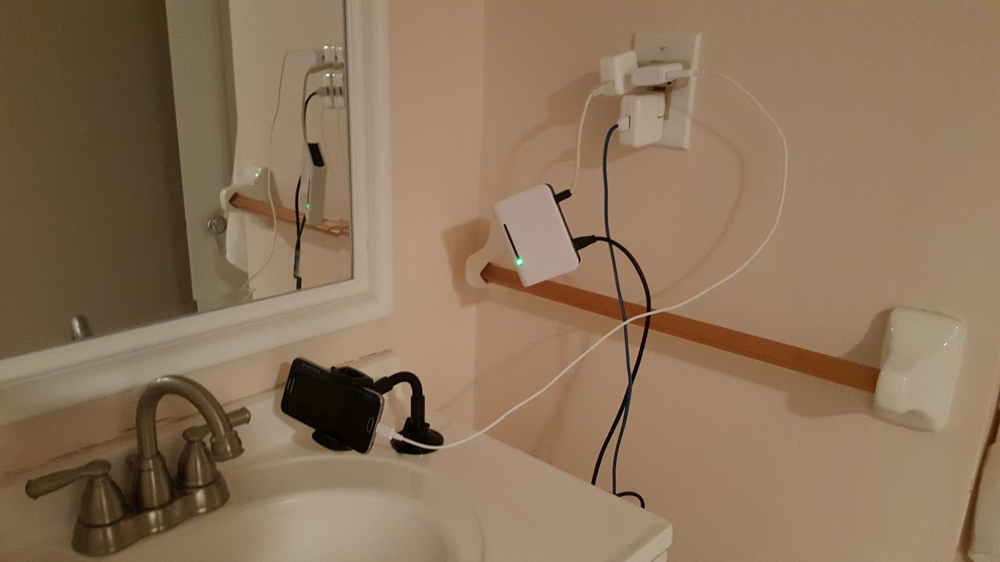
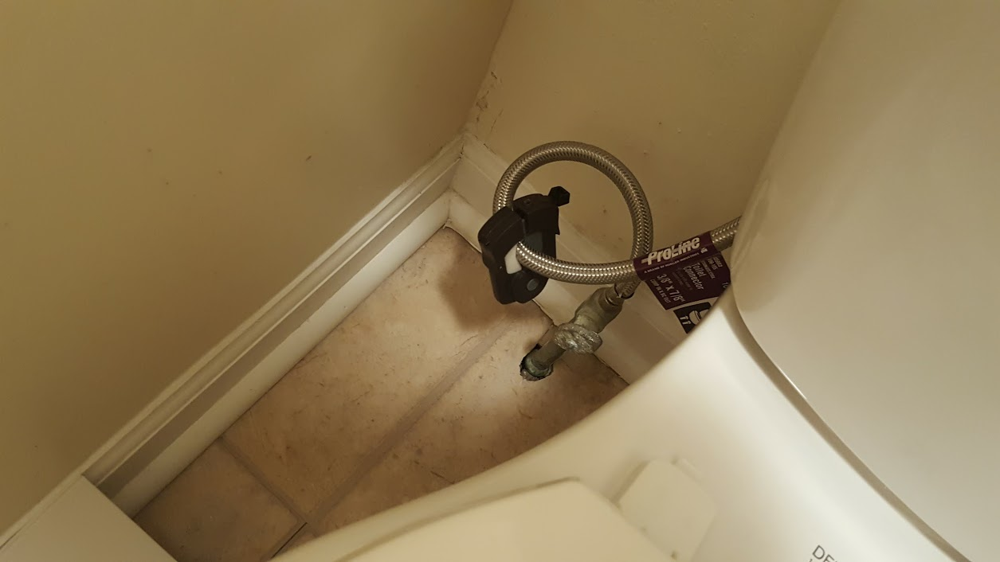
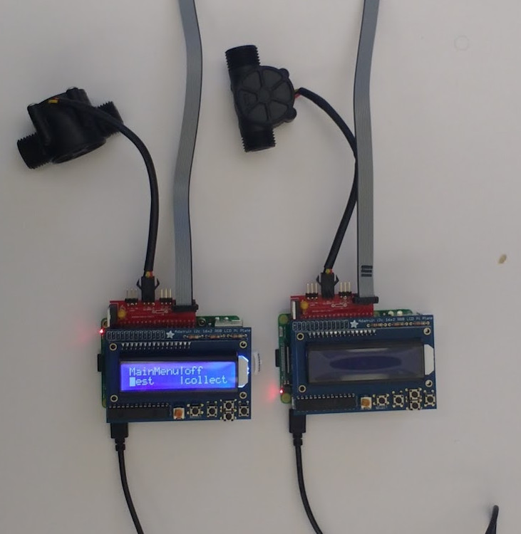

title: LotikLabs
theme: solarized
highlightTheme: argate separator: ---------------------------- verticalSeparator: v--------------------------- revealOptions: controls: true
Sayre Blades
Note: There will be some physics in this talk, so I hope you are ready.
http://samsungnext.com
http://lotik.com
Note:
(open samsung next link)
Lotik is partnerd with samsung next, a global investment initiative within samsung. Samsung next start is the division that targets start ups. They provide lotik resources like: office space, HR, legal, etc...
(talk about picture)
(back, open lotik link)
Lotik is a wireless water intelligence service. - does anybody pay a water bill? - why is usage monitoring important?
v---------------------------
Data Engineer
Note: Talk about my background
dont forget: - machine learning
This is my first professional ML project.
v---------------------------
Note:
(data science's less attractive sibling)
I am not a data science expert. Most of my career has mostly been focused on data processing: moving data from one place to another; storing it; retrieving it; building pipelines around it; and productionizing it.
In data-science terms, its called pre-processing.
v---------------------------

Note:
When I first joined the team, this is what data collection looked like. This is data to train/validate/test a classification model.
no fun
Attempt to get ground truth.
v---------------------------


v---------------------------

Note:
Here I will talk about taking the data in its raw form and converting it to a format that is consumable by our models.
v---------------------------
metadata file
pipe type: braided
pipe size: 3/8
fixture: bath sink auto
Started collection at: 2017-04-10 14:15:40.098894
stopped at: 2017-04-10 22:06:31.078903
Total number of rows: 11,541,037
rows/sec: 408.518111453950
csv data file
x,y,z,pulses
-0.8862,0.0303,0.2824,0
-0.9487,0.0254,0.2882,0
-0.9555,0.0283,0.3009,0
-0.9546,0.0244,0.2970,0
-0.9565,0.0264,0.2941,0
-0.9555,0.0254,0.3009,0
-0.9575,0.0274,0.2970,0
-0.9536,0.0274,0.2931,0
-0.9516,0.0274,0.3000,1
v---------------------------
``` time rmsx rmsy rms_z corr zcr flow label 18:15:49 0.00716 0.00297 0.00522 0.01446 60.00000 0.000 Off 18:15:50 0.00331 0.00322 0.00552 0.01086 69.33333 0.000 Off 18:15:51 0.00305 0.00306 0.00578 0.02608 66.00000 0.000 Off 18:15:52 0.00300 0.00303 0.00584 -0.04534 59.00000 0.000 Off 18:15:53 0.00334 0.00308 0.00582 -0.05407 54.33333 0.000 Off 18:15:54 0.00286 0.00302 0.00613 -0.07043 66.33333 0.000 Off 18:15:55 0.00290 0.00300 0.00584 0.03176 60.00000 0.000 Off 18:15:56 0.00377 0.00421 0.00650 0.09796 47.00000 0.000 Off
```
v---------------------------
time x y z p ml_bf
2017-04-10 18:15:49.065448999 -0.939 0.118 0.341 0 0.158
2017-04-10 18:15:49.067896000 -0.938 0.084 0.323 0 0.158
2017-04-10 18:15:49.070344000 -0.934 0.041 0.309 0 0.158
2017-04-10 18:15:49.072792000 -0.966 0.044 0.203 0 0.158
2017-04-10 18:15:49.075240000 -0.980 0.027 0.226 0 0.158
2017-04-10 18:15:49.077688000 -0.936 0.042 0.222 0 0.158
2017-04-10 18:15:49.080136000 -0.910 0.011 0.208 0 0.158
2017-04-10 18:15:49.082584000 -0.941 -0.023 0.223 1 0.158
https://pypi.python.org/pypi/palladium/
email: sblades@samsungnext.com
github: SayreBlades
Note: If you would like access to these slides feel free to drop me a line.